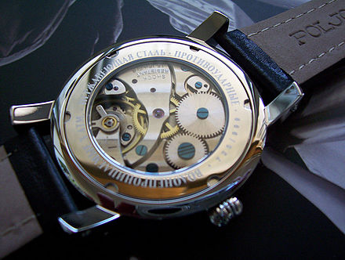
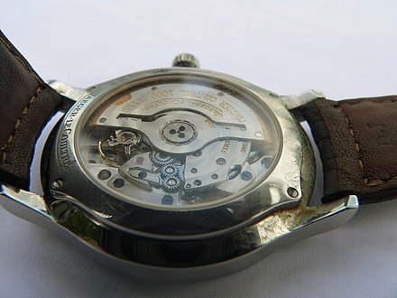
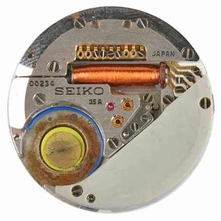
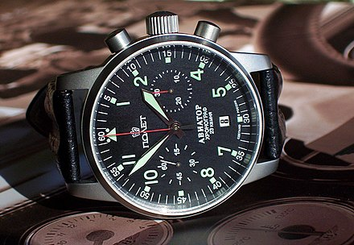
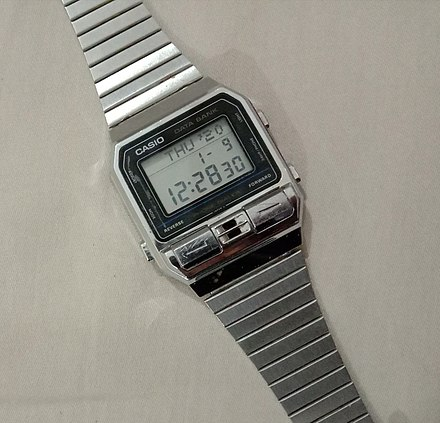
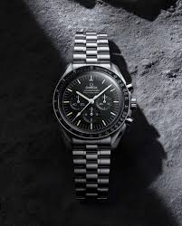
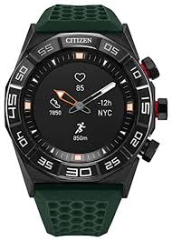

Watches
Types of Watches
-
On the basis of -
MOVEMENT
Mechanical
A mechanical watch movement is powered by manually winding the crown which then winds the mainspring which stores the energy to power the watch movement. How often you need to manually wind a mechanical watch can vary from watch to watch. Some watches with mechanical movements can run for several days without winding, while others may need to be wound every 24 hours.
Automatic
An automatic watch movement is a self-winding movement that is powered by the natural movement of the wearer’s wrist to wind the mainspring. It can do this by including a weighted rotor in the back of the case that spins with the movement of your wrist. An automatic watch does not require manual winding with regular wear as there is enough energy stored in the mainspring from your daily movements.
Quartz
Quartz watches feature an electronic circuit that is regulated by a quartz crystal to keep time. Quartz movement watches are the most common movement you will find in watches these days because they offer unrivalled accuracy with +/- 15 seconds a month across a wide range of budgets. However, they do require a battery which needs to be changed around every three years.
Solar
Solar watch movements are powered by solar cells that can convert light into energy, which is then used to power the watch movement. The energy that is absorbed by the collar cells is stored in a rechargeable battery which can keep the watch powered. These watches are low-maintenance because they don’t require battery-changing or movement winding and can be worn without any thought about the upkeep of the movement.
FUNCTIONALITY
Analog
Analogue watches display the time using a traditional clock face with three hands that point to the hour, minute, and second. Analogue watches can feature watch face complications that give you more information at the glance of the wrist, like a day and date window. Analogue watches are often chosen for their classic and timeless look. They are easy to use and don’t require any additional knowledge to operate.
Digital
Digital watches are a type of watch that displays the time on a digital display using digits or numerals, rather than traditional watch hands. Digital watches also come packed full of great timekeeping features like alarms, stopwatches, countdown timers, and world time. Digital watches are available for a wide range of budgets which makes them a great choice for watch wearers who love sports, keeping active and modern designs.
Chronograph
Chronograph watches have a traditional analogue watch face which has also been set with subdials. The typical chronograph function is a stopwatch, it is common to find chronographs with up to three subdials that keep track of different time measurements. These subdial functions are activated by pressing buttons located on the side of the watch case.
Hybrid
Hybrid watches are a type of watch that combines the classic look of an analogue watch and a modern digital watch together. They come packed with functions typically found in smartwatches because they combine classic and digital watch mechanics. You can expect to find features like activity tracking, smartphone notifications, and GPS. Hybrid watches typically connect to smartphones through Bluetooth.